01
Sensing
Fiber Bragg Gratings (FBG)
Rad-hard, passive optical sensors embedded in the structural fiber continuously monitor thermal, vibration, and radiation events across the bus — with no moving parts and zero power draw.

Advanced Light Thinking Architecture
ALTA fuses photonic sensing, processing and communication into a single lightweight platform for SmallSat autonomy — breaking the thermal wall of traditional electronics with an ITAR-free, sovereign EU supply chain.
Platform targets at full integration. Processing scaling per Wang et al. (2025); fully analogue signal chain per Duport et al. (2016). ALTA Processing currently TRL 4–5.
Why now
European-sourceable across fiber, PICs, lasers, qualification & silicon — ITAR-free
Technology
ALTA replaces heavy, power-hungry electronic subsystems with a continuous optical path from sensor to downlink. No EMI. Nanosecond decisions. Mass and watts saved by orders of magnitude.
Fiber Bragg Gratings (FBG)
Rad-hard, passive optical sensors embedded in the structural fiber continuously monitor thermal, vibration, and radiation events across the bus — with no moving parts and zero power draw.
Photonic Reservoir Computing
All-optical anomaly detection at light speed — energy scales O(1) vs. O(N²) digital (Wang et al., 2025). A fully analogue readout eliminates A/D conversion, keeping the signal in the optical domain end-to-end (Duport et al., 2016).
Fiber-Optic Backbone
A single fiber replaces ~100 copper wires for power and attitude coordination across the platform — cutting harness mass, EMI, and connector failure modes simultaneously.
Laser Terminal
Decisions — not raw data — are downlinked via 10 Gbps optical link. Analogue end-to-end processing eliminates digital pre-processing overhead, achieving 95% on-board data volume reduction per pass.
Where this goes
Fiber Loop Photonics is the common substrate — the markets below are the targeted applications as the platform matures through its TRL gates.
On-board photonic processing lets constellations sense, decide and downlink without waiting on the ground — autonomy that survives the radiation and thermal limits where silicon stalls.
Deterministic, EMI-immune photonic links carry flight-control signals at the speed of light — lighter harnesses, higher integrity, zero electromagnetic interference.
Photonic strain, temperature and vibration sensing across pipelines, structures and facilities — multi-point intelligence from a single fibre run.
Free-space laser links carry terabit-class data between LEO constellation nodes — bypassing congested RF spectrum and ground-station latency.
In-situ FBG arrays track aircraft, spacecraft and turbine wear in real time — early-warning intelligence at the edge, not after the fact.
Strategic Differentiation
EU-sourceable supply chain across fiber, PICs, lasers, flight qualification and silicon — Exail, LioniX, TOPTICA, Thales Alenia Space, STMicroelectronics. ITAR-free status enables export to U.S. defence primes (subject to EU dual-use controls).
U.S. systems are optimised for electronics, not photonics. Laser terminals (Mynaric, NASA LCRD) are already operational at 10+ Gbps — but no platform pairs them with analogue onboard processing. ALTA establishes that standard.
The global SmallSat market is projected to reach $13.7B by 2030 at 16.4% CAGR — with onboard computing platforms emerging as the highest-growth sub-segment as the industry shifts toward autonomous, software-defined spacecraft. ALTA targets that onboard intelligence layer.
Sources: Allied Market Research · Fortune Business Insights
Development Roadmap
From lab prototype to constellation deployment in four phases.
June 2026 · €375k
Demonstrate the Fiber Loop Photonics pipeline end-to-end with 95% anomaly-detection accuracy.
2027 – 2028 · €2M
Flight demonstration vs. an electronic baseline. Validate efficiency, mass and decision latency in LEO.
2029 · €10M
Shrink to wafer-scale silicon photonics. Integrate with European satellite OEM platforms.
2030+ · €50M+
Operational photonic autonomy across SmallSat constellations — sovereign, scalable, light-speed.
The Team
Business and photonics, end-to-end. Pre-seed.
Business Lead
MSc, Business and Administration. Strategy, fundraising and partnerships.
Photonics Lead
BSc, Aerospace Engineering. Optical architecture and photonic subsystems.
Two-person founding team · EIIS Annual Space Challenge alumni.
ALTA was founded in response to the Airbus / EIIS Annual Space Challenge. We are now scoping pilot integrations with European satellite primes, defence partners and research institutions.